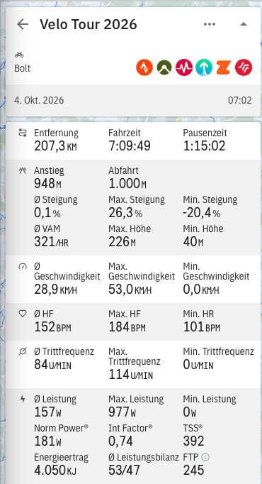
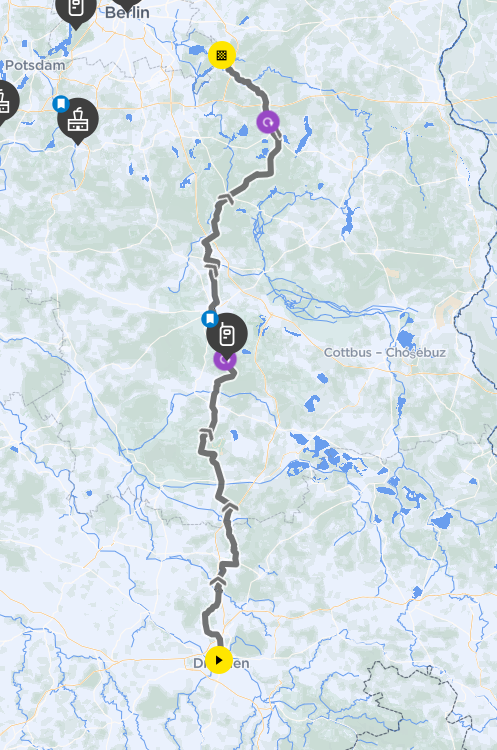
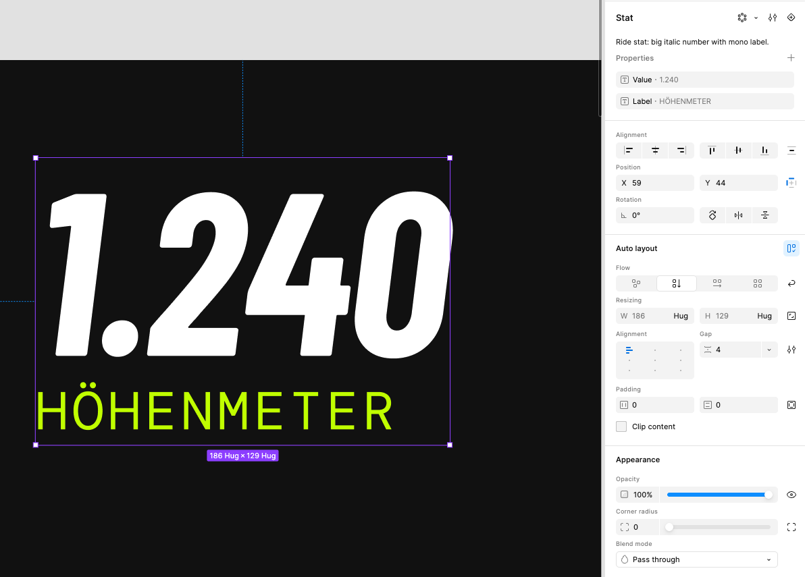
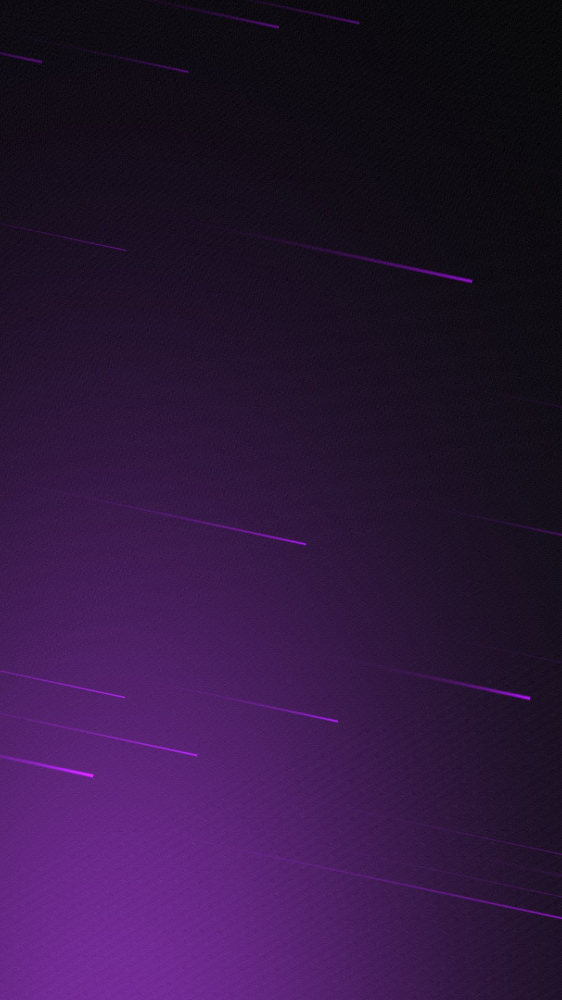
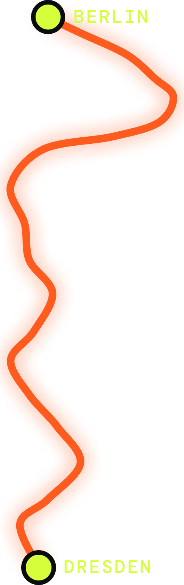
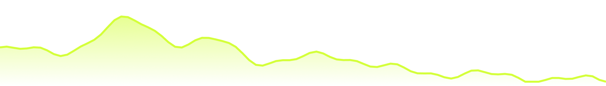

Fun project · Tutorial · Motion
Ride Recap: Figma Motion for Social Media
An animated Instagram story of a 207 km ride from Dresden to Berlin, built entirely in Figma. No After Effects, no export round trip. This page walks through every step, so you can build your own.
- Format
- Instagram story, 1080 × 1920 px, 6 seconds
- Why
- Trying out Figma Motion and shaders, launched at Config 2026, on a real use case
- Tools
- Figma (Motion, Shaders, Variables), Claude with the Figma MCP
- Built from
- 1 component, 6 color variables, 1 custom shader, 18 animated layers
01 · The problem
Every ride looks the same when you share it
After a long ride, I want to share it on @ridewithtobi. The usual options are not great:
- Screenshots of the app. Every bike computer and tracking app has its own stats screen. It works, but it looks like everyone else's and not like my channel.
- Motion means a second tool. Animated stories used to mean designing in Figma, then rebuilding everything in After Effects or a video app.
Can I design and animate a branded ride recap in one tool, from real ride data, in a way I can reuse for every ride?
02 · The solution
One story template, designed and animated in Figma
Figma now ships its own motion timeline and WebGPU shaders. That covers everything a short story needs:
- Reusable layout. Stats are one component with text properties, colors are variables. Next ride, I only change the numbers.
- A living background. A shader fill with light streaks that moves by itself.
- The real route. The line is drawn from my ride, not a stock illustration.
- Motion on the canvas. Keyframes sit on the same layers I designed, so design changes never break the animation.
03 · The basics
What you need
Nothing exotic. If you have a paid Figma seat and a ride, you are good to go.
- Figma, paid plan with a Full seatShaders and Figma Motion run on paid plans. Motion was in open beta when I built this, so check that it shows up in your account.
- Your ride dataA screenshot of the stats from your bike computer or app, plus the map. A GPX export is even better for an exact route.
- Two free fontsBarlow Condensed (Black and Bold Italic) for numbers, DM Mono for labels.
- Optional: Claude with the Figma MCPIt drew the route from my data and wrote the shader. You can also trace the route by hand with the Pen tool and use a built-in shader.




Set up the frame
- Create a frame of 1080 × 1920 px, the size of an Instagram story.
- Create a variable collection with your colors. Mine is called
Ride Recap:
| Variable | Value | Used for |
|---|---|---|
color/asphalt | #0B0C0E | Base background |
color/signal | #FF5B1F | The route |
color/lime | #D4FF3A | Accents, start and finish, labels |
color/ink | #FFFFFF | Numbers and headlines |
color/ink-muted | white, 56 % | Secondary text |
color/line | white, 14 % | Divider, route track |
Binding every fill to a variable pays off later: changing color/lime once recolors labels, dots and the elevation line at the same time.
04 · The component
One Stat component, six instances
Six numbers sit under the distance. They all share the same structure, so they are one component:
- Vertical auto layout with a gap of 4 px, hugging its content.
- Value: Barlow Condensed Bold Italic, 104 px, line height 90 %.
- Label: DM Mono, 24 px, letter spacing 8 %, in
color/ink-muted. - Two text properties,
ValueandLabel, so each instance is edited in the properties panel, not on the canvas.


The instances sit in two horizontal auto layout rows with space between, so the columns line up whatever the numbers are. Three per row keeps them readable on a phone.
| Row | Value | Label |
|---|---|---|
| 1 | 948 · 7:09 · 28,9 | Höhenmeter · Fahrzeit · Ø km/h |
| 2 | 181 · 152 · 53,0 | NP watt · Ø HF bpm · Max km/h |
The distance itself is not a Stat instance. It is the hero of the story and gets its own, much larger type: 260 px with the unit in color/lime.
05 · The background
A shader fill that moves by itself
Shaders are small programs that run on the graphics card and compute every pixel. In Figma they appear as a new fill type, next to solid and gradient. Two ways to get one:
- Built-in: Figma ships ready-made fills like Moving gradient, Glowing wave or Nebula. Pick one, tune the controls, done.
- Custom: describe what you want and let Figma's agent or Claude via the Figma MCP write it. That is how I made Speed Streaks.
- Add a rectangle1080 × 1920 px at the bottom of the layer stack, constraints set to stretch.
- Choose a shader fillIn the fill panel, switch the type to shader and pick yours.
- Tune the controlsEvery value the shader exposes shows up as a slider or color picker.
- Put content on topKeep the content in its own auto layout frame above it, so text never touches the shader.


Speed Streaks · my settings
- Asphalt
- #0B0C0E
- Streaks
- #B300FF
- Glow
- #C43AFF
- Speed
- 1
- Lanes
- 48
- Angle
- −12°
- Glow
- 0.55
- Grain
- 0.06
Tip: the angle matters more than you think. A slight tilt of −12° makes the streaks feel like speed instead of a pattern.
06 · The route and elevation profile
From a map screenshot to a vector path
This is the part where Claude did the work. I shared the two screenshots, and Claude drew the route line from them and placed it straight into the Figma file through the Figma MCP.
- TraceAbout 20 points are read along the route on the map, from Dresden to Berlin.
- ScaleThe points are stretched to fit next to the distance, keeping the shape recognizable.
- SmoothEach pair of points becomes a Bézier curve, so the line flows instead of zigzagging.
- PlaceThe path lands in Figma as an editable vector, colored with
color/signal.


How the route is layered
- Track
- 22 px stroke,
color/line - Route
- 10 px stroke,
color/signal, round caps - Glow
- Drop shadow, 0 offset, 28 blur, same orange at 70 %
- Start, finish
- 28 px circles in
color/lime, 6 px outline incolor/asphalt - Labels
- DM Mono Medium, 24 px
The prompt
If you want to try it with Claude and the Figma MCP, a prompt like this gets you there. Attach your two screenshots:
Here are the stats and the map of my ride. In my Figma file, draw the
route as a smooth vector path from start to finish, about 200 × 640 px,
next to the distance. Add a dim track behind it, a start and a finish
dot, and labels with the city names. Then add an elevation profile,
904 × 130 px, based on the min, max and total climbing.The elevation profile
The profile at the bottom is built the same way: a line with a gradient area below it, fading from orange at 55 % to transparent.


Honest note: both the route and the profile are approximations from screenshots. They are close enough for a story. For an exact line, export the GPX file of your ride and let Claude convert the coordinates and heights directly.
07 · Figma Motion explained
Keyframes on the layers you already have
Figma Motion adds a timeline under the canvas. Three words are all you need:
- Timeline: the length of the animation for one top-level frame. Mine is 6 seconds.
- Keyframe: a value at a point in time, for example opacity 0 at 0.7 s and opacity 1 at 1.1 s. Figma fills in the frames between.
- Easing: how the value travels between keyframes. Ease out starts fast and lands softly, which suits almost everything that enters the screen.
Besides manual keyframes there are presets like fade or slide. I used a fade preset on the title and added a scale on top.
Example: drawing the route
The most satisfying moment of the story is the route drawing itself from Dresden to Berlin. It needs only one property: Path trim end, which controls how much of a stroke is visible.
Path trim end on the route
| Time | Value | Easing |
|---|---|---|
| 0.9 s | 0 % | (start) |
| 2.9 s | 100 % | Ease in and out |
Two keyframes, two seconds. Ease in and out makes the line accelerate out of Dresden and slow down before Berlin. The start dot pops in just before (scale 0 to 1, 0.6 to 0.9 s, ease out back for a small overshoot), the finish dot right after.
This demo is rebuilt in the browser with the same path and timing. In Figma, it is exactly these two keyframes.
The whole choreography
Once one animation works, the rest is timing. The rule I followed: tell the story in reading order. Title, then where I rode, then how far, then the details.
Three things I learned
- The first keyframe holds back to zero. A layer with opacity 0 at 2.9 s stays invisible from the start. No extra keyframe needed.
- Transform values are relative. A move of 30 px means "30 px below where it rests", so moving the layer in the design never breaks the animation.
- Path trim is the hero property. Lines that draw themselves, like the route and the elevation profile, are what makes the story feel alive.
08 · The result
A reusable story, made in one file
- Reusable for every rideNew numbers in six component properties, a new route path, done. The motion stays.
- On brandColors, type and the streak background are mine, not the app's.
- Design and motion stay in syncKeyframes live on the design layers, so a layout change never means rebuilding the animation.
- A good first test of Figma MotionFor short social formats, it replaces my After Effects step completely.
What's next: a carousel version for the feed, and reading the route straight from a GPX file instead of a screenshot.